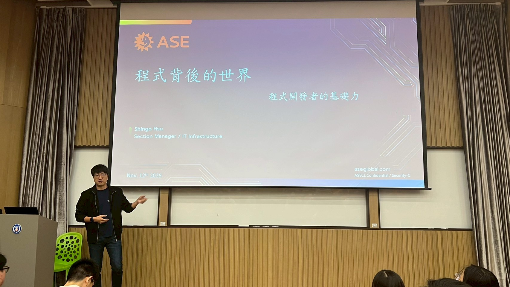
日期：114/11/12
講題: 程式背後的世界——程式開發者的基礎力
所屬單位 : 日月光ASE
職稱: Manager / IT Infrastructure
講者從企業 IT Infrastructure 的角度出發，說明大型企業的網路環境如何由多層設備組成， 包含 Edge Switch、核心交換器、路由器、防火牆、Proxy、VPN、VLAN 分段等。透過分層架構與 DMZ 通訊原則，企業能同時達到安全性與穩定性。
在實務上，許多拓撲與監控系統都是套裝軟體，因此畫面大同小異，但維運工程師的工作包含： 更新拓撲資訊、監控 Alarm、追查異常、協助設定基本設備，並對每天一萬四千名員工的使用問題做第一線回應。
講者也分享企業郵件、重要權限管理等高敏感度業務因涉及機密，不會交由實習生負責，以防止資訊外洩風險。
資安團隊負責從網路層、端點層監控可能的惡意行為，包含威脅情資分析、弱點掃描與修補、NDR/EDR 偵測與回應等。若有集團內部事件或外部通報的 IOC（Indicators of Compromise），資安人員需在期限內完成調查與回報。
由於此類事件通常需要 24 小時待命並具高度壓力，講者也提到不會讓實習生負責資安事件回應工作。 他分享了實際帶公務生的經驗，說明資安領域雖具有挑戰，但也需承受高壓與不固定的工作節奏。
此外，講者也介紹資安政策與個資保護（PIP）制度，並強調跨部門合作，例如與 HR、法遵部門、內控團隊共同落實安全規範。
日月光的 IT 實習涵蓋 CIM、ERP、Central、Infra 等多個單位，各部門均提供明確的技能需求與工作內容。 同學可依照興趣或擅長的程式語言選擇申請組別，即使沒有強大基礎，也能在主管的帶領下循序學習。
實習同時是公司挑選未來正式員工的重要途徑。若雙方合作契合、表現優秀，畢業後可直接轉正成為正式同仁； 男性亦可在兵役結束後回任。
福利方面包含免費員工餐廳、健身房、按摩區、旅遊津貼、績效獎金、分紅與大量特約商店，讓實習生也能享有完善資源。
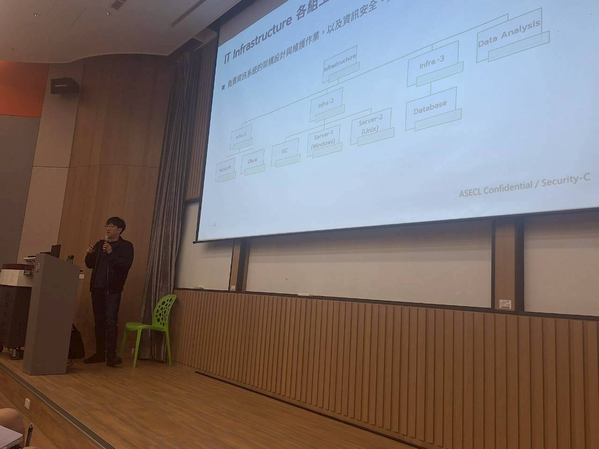
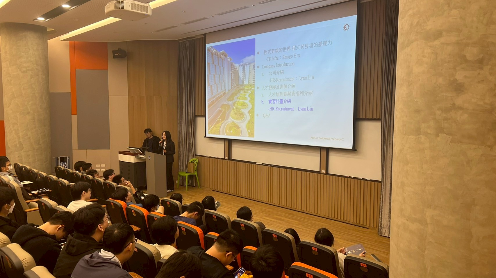
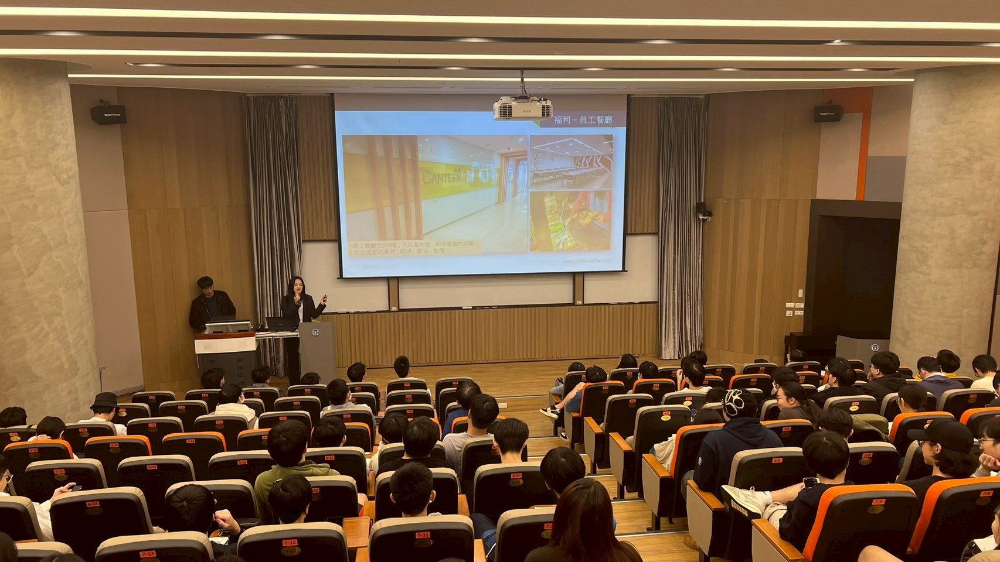
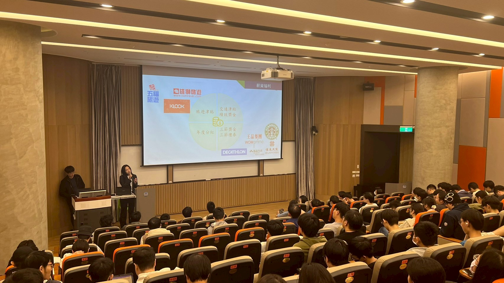
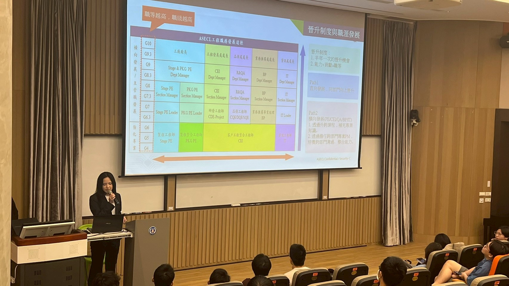
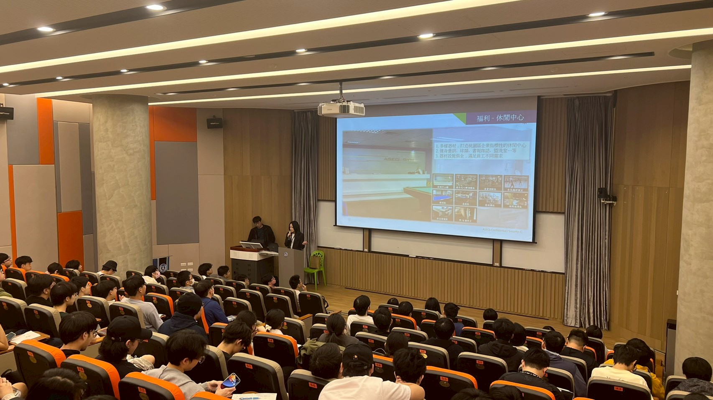
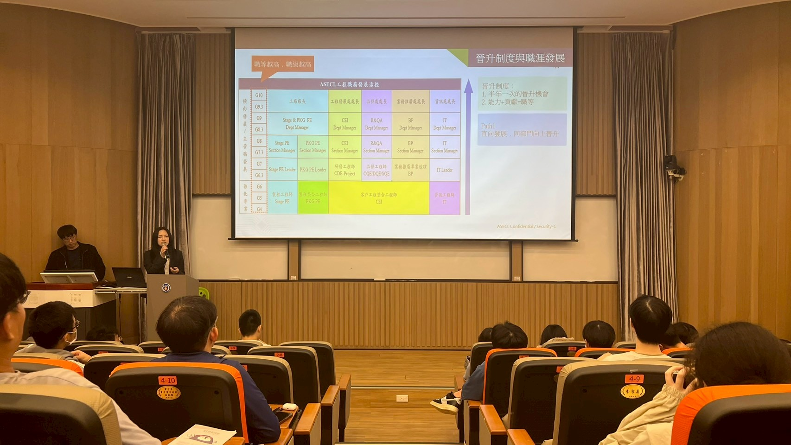
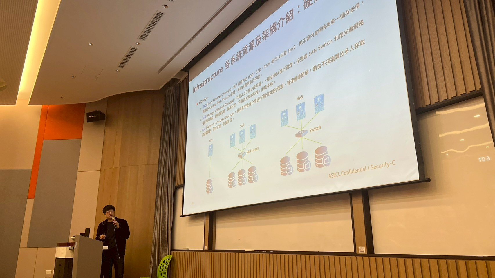
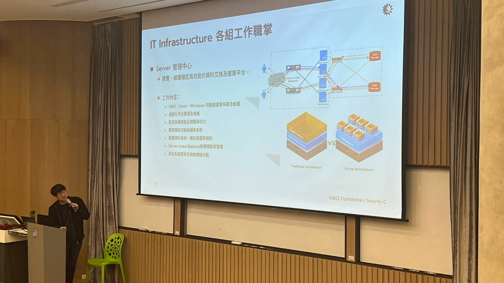
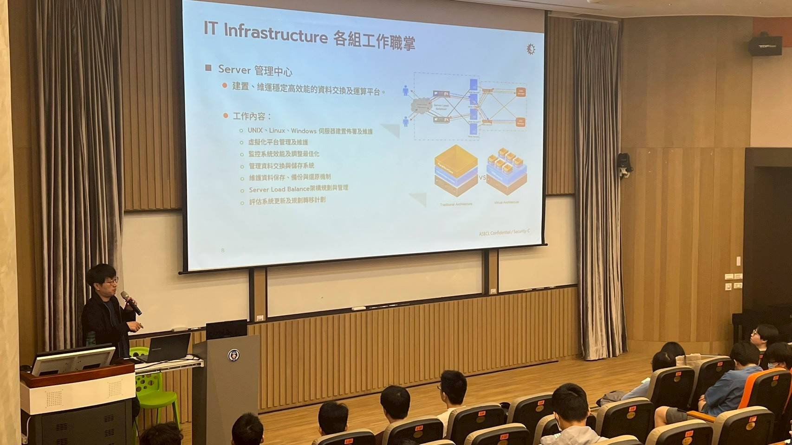
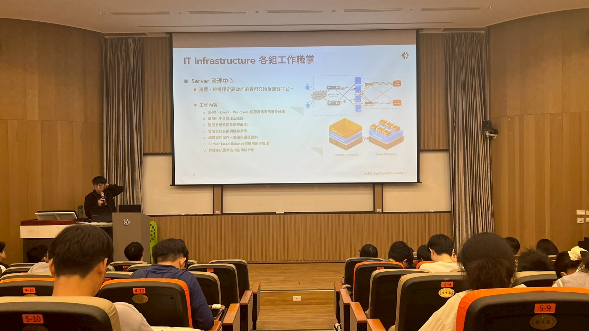
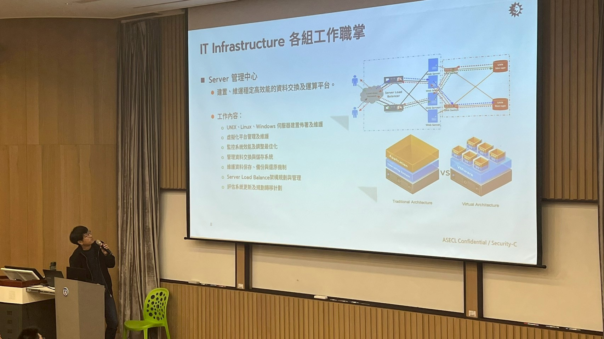
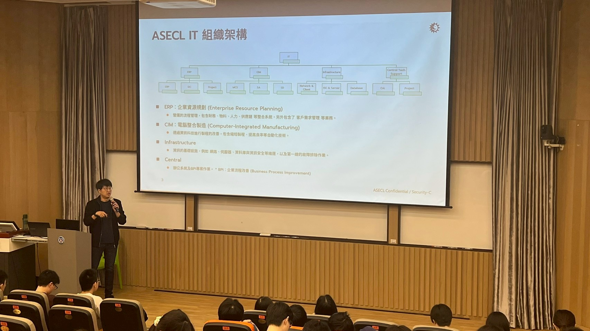